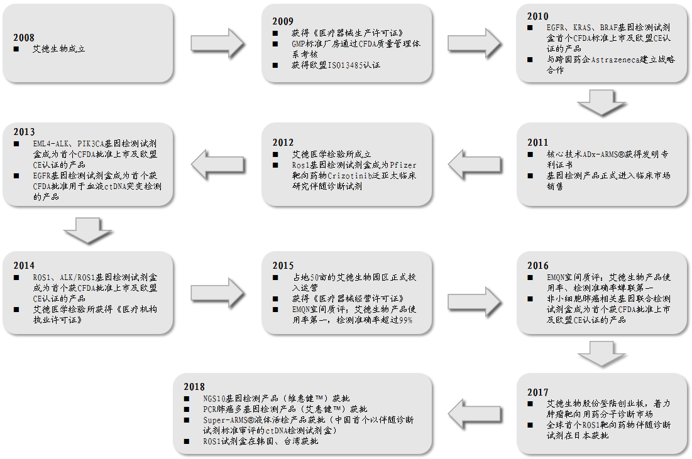
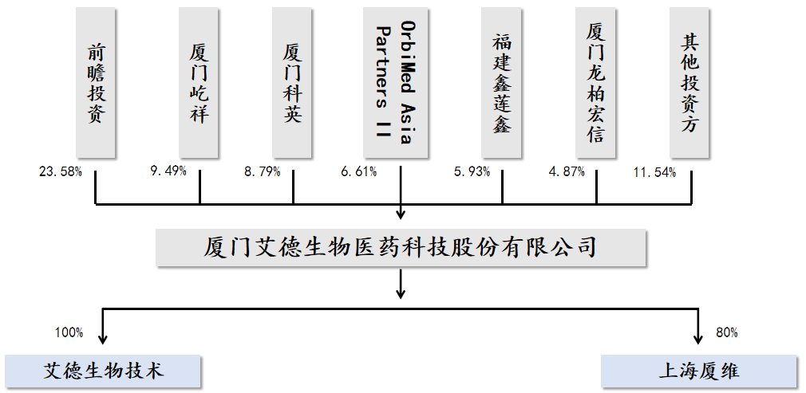
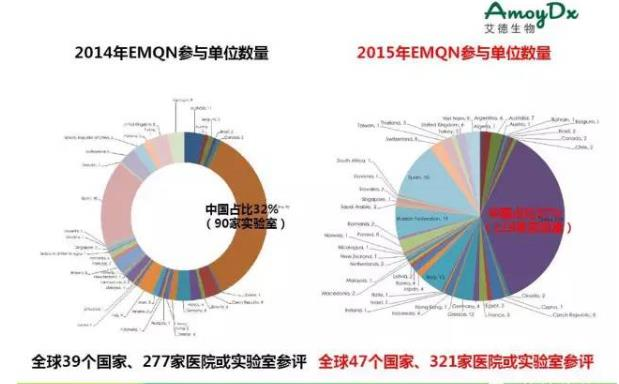
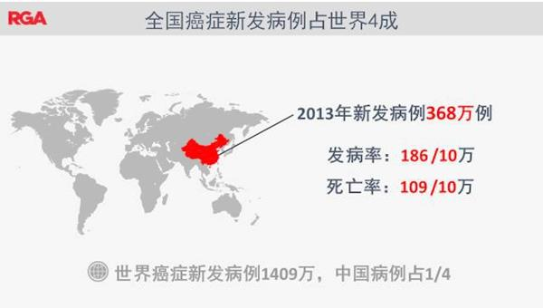
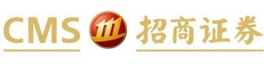
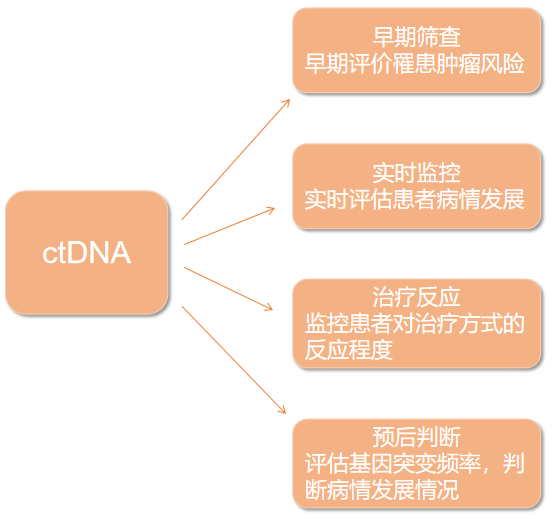

证券研究报告| 公司深度报告
日用消费
| IVD
强烈推荐-A（首次）
艾德生物 300685.SZ
目标估值：N/A
当前股价：40.91 元
肿瘤精准检测先锋，借力直上
2018 年 12 月 30 日
基础数据
我国肿瘤靶向药市场整体规模不断快速增长，带动肿瘤伴随诊断市场的高速增长。
上证综指
2494
公司作为国内分子诊断领域的领先企业，有望凭借其雄厚的研发实力和全面的产
总股本（万股）
14400
品布局，成为肿瘤精准医疗检测这一细分市场的领头羊。
已上市流通股（万股）
9110
总市值（亿元）
59
流通市值（亿元）
❑
37
公司掌握核心技术，是目前国内分子诊断领域的领先企业。公司拥有完全自
每股净资产（MRQ）
5.0
主研发并具备国际领先水平的 ADx-ARMS®、Super-ARMS®、ddCapture®
ROE（TTM）
16.8
基因检测技术，产品目前已覆盖国内超过 300 家大中型医疗机构，并进入超
资产负债率
11.4%
过 50 个海外国家市场，近年来营收和利润均保持较高速度增长。无论从产品
主要股东
前瞻投资（香港）有限
公司
研发实力还是市场开拓速度方面，公司在业内均处于领先地位。
主要股东持股比例
23.58%
股价表现
❑
研发实力强大，产品布局全面。公司多个重磅产品于今年集中获批，其中人
类 EGFR 突变基因检测试剂盒为国内首个通过创新医疗器械特别审批通道获
%
1m
6m
12m
绝对表现
-15
-29
-14
批上市的 ctDNA 液体活检试剂盒，具备先发优势；5 种突变基因检测试剂盒
相对表现
-9
-17
11
（荧光 PCR 法）可检测包括 EGFR、ALK、ROS1、KRAS、BRAF 在内的多
(%)
艾德生物
沪深300
个肺癌核心驱动基因。2018 年 11 月最新获批的人类 10 基因突变联合检测
60
试剂盒基于二代测序（NGS）技术，覆盖了肺癌、结直肠癌目前已上市及拟
40
上市的靶向药物所需要检测的所有基因变异，是公司产品布局的重要补充与
20
0
升级。公司其它重要在研产品包括基于 PCR、NGS 技术平台的针对乳腺癌
-20
等多种癌症的基因检测产品，有望于 2019 年年初陆续获批上市。
-40
Jan/18
Apr/18
Aug/18
Dec/18
❑ 肿瘤伴随检测市场前景广阔，极具开发潜力。由于人口老龄化导致的肿瘤患
资料来源：贝格数据、招商证券
者人口增加、肿瘤靶向药物的普及、基因检测在肿瘤精准医疗中使用率的提
相关报告
升，以及临床治疗中逐渐将肿瘤纳入慢性病管理后带来的患者检测次数的提
升等多方面因素的影响，我国肿瘤伴随检测市场待开发空间极为广阔。
❑ 首次覆盖给予“强烈推荐-A”评级。我们预计公司 2018-2020 年净利润分别
为 1.31 亿/1.81 亿/2.46 亿，同比分别增长 40%/38%/35%，对应 2018 年 45
倍 PE。我们认为国内肿瘤精准医疗检测市场正处于快速成长阶段，公司作为
国内领先的分子诊断企业，将充分享受产品放量与市场扩容的双重红利，首
次覆盖给与“强烈推荐-A”评级。
❑ 风险提示：产品大幅降价的风险；新产品上市及推广进度不及预期的风险
吴斌
财务数据与估值
❑
wubin11@cmschina.com.cn
会计年度
2016
2017
2018E
2019E
2020E
S1090517040001
主营收入(百万元)
253
330
440
579
758
研究助理
同比增长
43%
31%
33%
32%
31%
漆经纬
营业利润(百万元)
60
92
130
189
264
qijingwei@cmschina.com.cn
同比增长
210%
54%
41%
45%
40%
净利润(百万元)
67
94
131
181
246
同比增长
218%
40%
40%
38%
35%
每股收益(元)
1.12
1.18
0.91
1.26
1.71
PE
36.6
34.8
44.9
32.5
24.0
PB
8.0
5.0
8.3
6.9
5.6
资料来源：公司数据、招商证券
敬请阅读末页的重要说明

公司研究
正文目录
一、公司基本情况 ......................................................... 5
1、公司简介 .............................................................. 5
2、公司发展历程 .......................................................... 5
3、公司股权结构 .......................................................... 6
二、专注分子诊断业务，主营产品占比突出 ................................... 6
1、检测试剂业务占比超九成 ................................................ 7
2、检测服务主要为配合产品推广，占比不高但意义重大 ........................ 8
3、核心技术领先，重视研发优势 ............................................ 8
三、业绩稳健高速增长，财务指标持续优化 ................................... 9
1、主营业务发展带动公司营收利润高速增长 .................................. 9
2、综合毛利率稳定，费用率呈下降趋势 ..................................... 10
四、受益肿瘤靶向药市场增长，分子诊断市场空间广阔 ........................ 11
1、分子诊断行业在体外诊断市场中最具成长性 ............................... 11
2、肿瘤精准医疗助推分子诊断市场高速增长 ................................. 13
3、2017 年起肿瘤靶向药物陆续进入医保，推动肿瘤伴随检测高增长 ............ 14
五、行业群雄并起，公司占据优势 .......................................... 17
1、海外市场较为成熟，国内市场快速发展 ................................... 17
2、公司多项财务指标处于领先位置 ......................................... 18
六、定位肿瘤精准医疗,产品前景光明 ....................................... 20
1、检测药剂靶点覆盖全面，核心产品先发优势明显 ........................... 20
2、产品适销对路，使用率极高 ............................................. 22
3、加强战略合作，提高研发新药力度 ....................................... 24
4、三大因素激发产品销量，肿瘤检测试剂前景光明 ........................... 25
七、公司发展新方向：ctDNA 检测产品与 NGS 技术 ............................ 27
1、ctDNA 检测产品提供未来三到五年发展动力 ............................... 27
1.1、ctDNA 检测：优势明显的液体活检新技术 ............................... 27
1.2、ctDNA 临床应用广泛 ................................................. 28
1.3、液体活检市场快速增长，癌症领域占据绝对份额 ......................... 29
1.4、公司较早布局 ctDNA 技术，产品率先获批，市场潜力大 ................... 29
敬请阅读末页的重要说明
Page 2

公司研究
2、布局 NGS 新技术，公司未来的另一条主赛道 ............................... 31
2.1、NGS 技术：传统测序革命性的改变 ..................................... 31
2.2、NGS 已成全球主流，行业增速可观，肿瘤领域突出 ....................... 31
2.3、公司提前布局 NGS 产品链，计划五年左右进入行业 ....................... 32
四、盈利预测与估值 ...................................................... 33
五、风险提示 ............................................................ 34
PE-PB Band .............................................................. 35
图表目录
图 1：艾德生物发展历程 ................................................... 5
图 2：艾德生物主要股东持股情况 ........................................... 6
图 3：艾德生物试剂及检测服务收入（亿元） ................................. 7
图 4：艾德生物 2017 年各主要试剂品种销售占比情况 .......................... 7
图 5：艾德生物研发投入（万元）及占比 ..................................... 9
图 6：IVD 企业 2017 年研发投入（万元）及占比对比 ........................... 9
图 7：艾德生物营业收入(亿元)及增速 ...................................... 10
图 8：艾德生物扣非归母净利润（亿元）及增速 .............................. 10
图 9：2017 年艾德生物主要产品及业务毛利率 ................................ 10
图 10：2012-2018 年三季度艾德生物销售毛利率及增速 ........................ 10
图 11：2012-2018Q3 艾德生物销售费用率及增长率 ............................ 11
图 12：2012-2018Q3 艾德生物管理费用率及增长率 ............................ 11
图 13：全球分子诊断市场规模（亿，美元）及增速 ........................... 12
图 14：中国分子诊断市场规模（亿元，人民币）及增速 ....................... 12
图 15：中国分子诊断市场应用情况 ......................................... 13
图 16：中国分子诊断技术应用格局 ......................................... 13
图 17：2022 年全球精准医疗分子诊断市场规模将达到 65 亿美元 ................ 14
图 18：2010-2014 年全国新发癌症人数（万人）及增速 ........................ 16
图 19：2014 年全国发病率前十癌症 ......................................... 16
图 20：IVD 是医疗器械行业中市场占比最高的子领域 .......................... 17
图 21：2015 年全球体外诊断行业竞争结构 ................................... 18
图 22：2015 年国内分子诊断行业竞争结构 ................................... 18
敬请阅读末页的重要说明
Page 3

公司研究
图 23：艾德生物检测试剂收入情况 ......................................... 23
图 24：艾德生物 2017 年分产品收入占比 .................................... 23
图 25：艾德生物 EGFR 基因系列产品销售情况 ................................ 23
图 26：艾德生物 KRAS 基因系列产品销售情况 ................................ 23
图 27：2014、2015 年 EMQN 参与单位情况 .................................... 24
图 28：2007-2017 中国 60 岁以上人口数量及比重 ............................. 26
图 29：中国癌症新发病例人数巨大 ......................................... 26
图 30：我国城镇居民人均可支配收入逐年稳定上升 ........................... 26
图 31：中国肿瘤个体化诊断渗透率快速增长 ................................. 26
图 32：ctDNA 临床应用 .................................................... 29
图 33：全球液体活检市场规模（亿美元） ................................... 29
图 34：全球液体活检市场规模占比 ......................................... 29
图 35：2014 年我国癌症患病情况 ........................................... 30
图 36：全球 NGS 市场规模(亿美元) ......................................... 31
图 37：艾德生物历史 PE Band .............................................. 35
图 38：艾德生物历史 PB Band .............................................. 35
表 1：2018 年 10 月第三批医保准入谈判结果 ................................. 15
表 2：2017 年 7 月第二批谈判目录入选肿瘤药在医保覆盖后的销售增长情况 ...... 16
表 3：上市公司财务数据对比（2018 年三季报） .............................. 19
表 4：上市公司业务对比 .................................................. 19
表 5：艾德生物主要产品 .................................................. 20
表 6：主要企业 NMPA 批准肿瘤个体化用药基因检测产品覆盖对比 ............... 22
表 7：艾德生物海内外合作情况（部分） .................................... 25
表 8：截止 2018 年 12 月艾德生物处于申请状态的医疗器械 .................... 25
表 9：组织活检和液体活检对比 ............................................ 28
表 10：目前已上市 4 款 NGS 试剂产品对比 ................................... 32
表 11：艾德生物盈利预测 ................................................. 33
表 12：可比公司估值对比表 ............................................... 34
附：财务预测表 .......................................................... 36
敬请阅读末页的重要说明
Page 4


公司研究
一、公司基本情况
1、公司简介
厦门艾德生物医药科技股份有限公司创办于 2008 年，主营业务系肿瘤精准医疗诊断产
品的研发、生产、销售、以及服务为一体，同时具备三类体外诊断产品生产/经营资质
及独立临床医学检验资质。公司主要依托厦门总部（产品研发、生产）
、医学检验所（临
床检测）、上海夏维（下一代新技术研发）三大平台开展业务。公司通过对肿瘤患者提
供基因检测，为靶向药物的使用和个体化治疗提供科学依据。
公司自成立以来获得国内外发明专利授权 20 余项，包括业界领先的 ADx-ARMS®、
Super-ARMS®、ddCapture®技术平台。针对目前肿瘤精准医疗的众多相关基因，公司
陆续研发的 21 种基因检测产品，多为我国首批获得国家药监局医疗器械注册证书和通
过欧盟 CE 认证的产品。
基于全面的产品链、强劲的研发实力，公司建立起完备的营销体系，产品已进入全球
50 多个国家和地区的数百家大中型医院、科研院所，是阿斯利康、辉瑞、默克、勃林
格殷格翰等海外靶向药巨头在国内的诊断合作伙伴，目前已成长为国内肿瘤精准医疗检
测这一细分领域的领先企业。
2、公司发展历程
图 1：艾德生物发展历程
资料来源：公司官网、招商证券
敬请阅读末页的重要说明
Page 5


公司研究
3、公司股权结构
根据公司 2018 年三季报，前瞻投资（香港）有限公司持有艾德生物 23.58%的股份，为
公司控股股东。而公司董事长兼总经理郑立谋先生拥有前瞻投资 80%以上股权，因此郑
立谋先生通过前瞻投资成为公司的第一大股东和实际控制人。其它股东包括厦门屹祥，
厦门科英，福建鑫莲鑫均为当地投资平台，主要涉及于生物医药行业。
公司还拥有两家子公司：厦门艾德生物技术研究中心有限公司以及上海厦维生物技术有
限公司，分别主要从事检测服务业务以及分子诊断产品和技术的研发工作。
图 2：艾德生物主要股东持股情况
资料来源：公司财报、招商证券
二、专注分子诊断业务，主营产品占比突出
公司业务结构由分子诊断试剂销售和检测服务构成。其中前者为营业收入和净利润主要
来源，是公司的主营业务；而检测服务只占收入和净利润的一小部分，多采用和国内外
药企以及医院合作的方式进行。虽然其绝对份额仍较低，但是与药企合作的检测服务业
务一方面可以促进诊断试剂的销售效率，另一方面也是扩大公司声誉的良好手段。
敬请阅读末页的重要说明
Page 6

公司研究
图 3：艾德生物试剂及检测服务收入（亿元）
3.5
0.2802
3
0.3424
2.5
0.16849
2
0.1474
1.5
3.0194
0.0575
2.1814
1
0.0535
1.6213
1.85423
0.5
0.0391
1.0084
0.6889
0.3399
0
2012
2013
2014
2015
2016
2017
2018H1
检测试剂收入
检测服务收入
资料来源：wind、招商证券
1、检测试剂业务占比超九成
目前公司主要收入和净利润来自检测试剂的销售。2017 年年报数据显示报告期内，公
司检测试剂业务实现营业收入 30,193.59 万元，比去年同期增长 38.41%，占总营业收
入的 91.39%，其中 EGFR、KRAS、ALK 和 ROS1 四种基因的相关检测试剂的销售合计试剂
销售总规模的 81.99%。
EGFR 基因检测产品销售收入占比最大，约占总收入的 46%,但随着公司产品线的丰富，
其占比已开始减小;KRAS、ALK、ROS1 等其他主要基因检测产品约 36.1%,值得一提的是
ROS1 基因融合检测试剂盒获得日本厚生劳动省批准并进入日本医保支付,成为全球首个
获批的克唑替尼伴随诊断试剂,2017 年收入 3210 万元,同比增长 331%。公司几款主要产
品收入稳定增长，市场表现良好，是可靠的利润保障。
根据 2018 年公司半年报，上半年公司检测试剂业务实现营业收入 18,542.34 万元，比
去年同期增长 38.74%，占总营业收入的 91.57%，可见公司的业务结构保持稳定，核心
试剂产品销售持续快速增长是公司业绩增长的主要驱动力。
图 4：艾德生物 2017 年各主要试剂品种销售占比情况
8.61%
EGFR
9.40%
KRAS
9.72%
ALK
45.89%
ROS1
11.36%
其它检测产品
其他业务
15.02%
资料来源：wind、招商证券
敬请阅读末页的重要说明
Page 7

公司研究
2、检测服务主要为配合产品推广，占比不高但意义重大
公司检测服务业务主要由全资子公司艾德生物技术负责。根据 2018 年半年报，报告期
内公司检测服务业务实现营业收入 1,684.90 万元，比去年同期增长 13.44%。虽然收入
占比不高，但是艾德生物的检测服务与其检测产品的研发密切相关。通过在检测服务方
面与知名药企合作，公司和这些药企建立了紧密的新药研发合作，从而为将来新靶向药
伴随检测产品的开发和销售提供了一定的保障。同时，通过自建检测实验室为医疗机构
分担一定的检验业务，也有助于公司开发更多的市场用户，提高客户黏性。
3、核心技术领先，重视研发优势
公司是我国首家专业化的肿瘤精准医疗分子诊断试剂研发生产企业，自主知识产权的核
酸分子检测技术（ADx-ARMS®、Super-ARMS®）是在行业内处于国际领先的地位，既可
以在 DNA 水平上检测单碱基突变、插入、缺失等基因突变，也可以在 RNA 水平上检测基
因融合，在肿瘤相关基因突变检测方面具有敏感、特异、简便、快捷的优点，适合于各
种检测样本，并可用于多重基因高通量检测，达到行业公认的国际先进水平。
公司在保持已有产品和技术的先发优势的同时积极布局新技术和新产品的开发，例如在
今年先后获批的 ctDNA 液体活检试剂盒、5 种突变基因检测试剂盒（荧光 PCR 法）NGS
10 基因突变联合检测试剂盒，均是对公司现有产品布局的重大补充和升级，未来有望
成为公司的重要增长驱动。
2014-2016 年，公司研发支出占当期营业收入的比重均保持在 19%左右。2017 年略有下
降，但仍占营业收入的 15.39%，而这一数据在 2018 年第三季报中又回升至 18.18%。与
同行业相似企业的平均 10%左右的研发投入占比对比，公司研发投入占营业收入比例处
于领先位置。相比行业内一些企业重销售轻研发的策略，公司的高研发投入能为公司带
来更加长久的竞争力，并让公司不断保持技术优势。
截止 2017 年底，公司研发人员 147 人，占员工总数比例为 35.42%，占比较 2016 年上
涨两个百分点，也从另一方面反映出公司对研发的重视。
敬请阅读末页的重要说明
Page 8

公司研究
图 5：艾德生物研发投入（万元）及占比
图 6：IVD 企业 2017 年研发投入（万元）及占比对比
6000
5082.8
25%
20000
20%
5000
19.10%
4931.3
20%
16.23%
15000
15%
4000
3377.7
19.49%
3286.2
15%
10000
10%
3000
15.39%
10%
5000
5%
2000
5%
1000
0
0%
华
达
安
万
迪
三
艾
贝
阳
透
0
0%
大
安
图
孚
瑞
诺
德
瑞
普
景
基
基
生
生
医
生
生
基
医
生
2015
2016
2017
2018H1
因
因
物
物
疗
物
物
因
疗
命
研发投入金额（万元）
研发投入占营业收入比例
研发投入金额（万元）
研发投入占营业收入比例
资料来源：wind、招商证券
资料来源：wind、招商证券
三、业绩稳健高速增长，财务指标持续优化
1、主营业务发展带动公司营收利润高速增长
根据公司 2018 年第三季报，前三季度公司实现营业收入 31,048.73 万元，同比增长
27.96%；归母净利润 9,587.28 万元，同比增长 41.27%；归母扣非净利润 8,287.56 万
元，同比增长 28.08%。
从整体来看，截止至 2018 年三季度，公司近五年收入复合增长率达到 33.08%，在同期
所有 A 股上市公司中亦名列前茅；公司扣非归母净利润复合增长率达 43%，净利润增速
高于同期营收增速，显示公司盈利能力不断强化。虽然公司第三季度因海外收入确认时
点延后，使业绩增速出现了一定的波动，但从全年来看预计仍然能持续保持高增长。
公司近年来营业收入和净利润均保持快速增长的主要原因是：
一、主营业务分子诊断试剂受益于肿瘤精准医疗市场的快速发展，市场空间不断打开。
二、公司产品技术实力强，市场接受度高，核心产品 EGFR、EGFR/ALK/ROS1 检测试剂
占据先发优势，在全国市场推广十分迅速，且公司市场渠道以直销为主，毛利率高于经
销。
敬请阅读末页的重要说明
Page 9

公司研究
图 7：艾德生物营业收入(亿元)及增速
图 8：艾德生物扣非归母净利润（亿元）及增速
3.50
94.98%
3.30
1.00
100%
3.10
100%
0.83
3.00
80.58%
0.80
65.60%
2.53
80%
0.80
71.62%
80%
2.50
43.61%
66.01%
60%
2.00
0.60
60%
1.77
0.48
1.50
40%
1.07
27.96%
0.40
0.28
40%
1.00
0.74
43.03%
30.59%
20%
0.50
0.20
28.08%
20%
0.00
0%
0.00
0%
2013
2014
2015
2016
2017
2018Q3
2015
2016
2017
2018Q3
营业总收入（亿元）
同比(%)
扣非净利润（亿元）
同比(%)
资料来源：wind、招商证券
资料来源：wind、招商证券
2、综合毛利率稳定，费用率呈下降趋势
2013-2017 年公司综合毛利率均在 90%之上，2018 半年报显示公司检测试剂收入毛利率
达 93.88%，可见公司综合毛利率较为稳定。细分产品种类来看，2017 年 EGFR 检测试剂
毛利率高达 96.06%，其余主要产品的毛利率也均保持在 90%以上，为公司提供稳定的利
润来源。
保持高毛利率原因主要有：1.公司所处 IVD 行业为新兴产业，技术要求高，国内发展尚
不成熟，行业毛利率普遍较高。2.公司产品及技术领先，众多诊断试剂均为国内率先获
批产品，具有先发优势，能够较好地维持产品价格。
图 9：2017 年艾德生物主要产品及业务毛利率
图 10：2012-2018 年三季度艾德生物销售毛利率及增速
95.00%
94.19%
120.00%
94.00%
96.06%
93.15%
90.34%
95.15%
95.98%
93.23%
100.00%
93.00%
72.08%
80.00%
92.36%
92.00%
60.00%
91.06%
91.25%
90.82%
40.00%
91.00%
20.00%
90.00%
0.00%
89.00%
EGFR
KARS
ALK
ROSI
检测服务
2012
2013
2014
2015
2016
2017
2018Q3
销售毛利率(%)
资料来源：wind、招商证券
资料来源：wind、招商证券
2013-2017 年公司期间费用率分别为 79.59%，68.73%，76.78%，81.21%，69.10%。2015，
2016 年因新厂区投入使用，行政办公用固定资产折旧相应增加、研发投入加大，费用
率有所上升但此后呈明显下降。
敬请阅读末页的重要说明
Page 10

公司研究
公司的销售费用率占比较高。个体化诊断技术在临床的应用需要有力的学术推广支持，
公司销售费用结构中，市场推广费占比最高，这也是医药行业的普遍情况。但伴随营销
体系的不断完善以及个体化诊断接受度的提高，公司 2015-2017 以及 2018 年上半年销
售费用率逐步下降。另一方面，公司产品目前覆盖 300 家医院，收入的增长主要受益于
争取现有医院内达到全产品线覆盖和新产品特别是联合检测产品放量，且在享受到靶向
药物下降和医保覆盖的政策红利，而非新医院客户的拓展，所以销售费用的增长速度会
低于收入增长的速度。
管理费用中研发支出是最大的一项，2014、2015 年，公司管理费用金额及占比上升较
多，主要由于公司加大研发投入以及新厂区投入使用，行政办公固定资产折旧相应增加
引致。2014-2016 年公司研发投入比接近 20%，2017 年有所下降。此外随着公司老厂未
摊销费用装修费的摊销，管理费用率最近几个季度持续下降，预期未来公司管理费用率
将稳定小幅波动并总体有所降低。
整体来看公司近几年销售费用率及管理费用率均处于下降趋势中，费用控制能力能力的
成熟带动公司净利润率持续上升，盈利能力不断得到增强。
图 11：2012-2018Q3 艾德生物销售费用率及增长率
图 12：2012-2018Q3 艾德生物管理费用率及增长率
50% 43.96%
44.70%
10%
50%
30%
41.68%
43.63%42.83%39.28%37.15%
38.94%
20%
40%
40% 35.72%
7.25%
5%
31.35%24.21%
10%
30%
30%
26.60%
27.77%
24.43% 0%
17.86%
23.22%
-1.83%
0%
5.21%
20%
-10%
20%
-2.39%
-5.42%
-20%
-5%
10%
-5.19%
-8.29%
10%
-16.38%
-25.53%
-30%
-28.69%
0%
-10%
0%
-40%
2012
2013
2014
2015
2016
2017
2018Q3
2012
2013
2014
2015
2016
2017
2018Q3
销售费用/营业总收入
增长率
管理费用/营业总收入
增长率
资料来源：wind、招商证券
资料来源：wind、招商证券
四、受益肿瘤靶向药市场增长，分子诊断市场空间广阔
1、分子诊断行业在体外诊断市场中最具成长性
体外诊断，即 IVD（InVitroDiagnosis）
，是指在人体之外，通过对人体样本（血液、
体液、组织等）进行检测而获取临床诊断信息，进而判断疾病或机体功能的产品和服务。
按照不同的检测原理和方法，体外诊断可分为生化诊断、免疫诊断、分子诊断、微生物
诊断、尿液诊断、凝血类诊断、血液学和流式细胞诊断等，目前我国体外诊断的主要方
法为生化诊断、免疫诊断和分子诊断。
敬请阅读末页的重要说明
Page 11

公司研究
分子诊断是利用分子生物学方法检测患者体内遗传物质的结构或表达水平的变化而做
出诊断的技术，广泛用于肝炎、性病、肺感染性疾病、优生优育、遗传病基因、肿瘤等
等领域。基因检测领域应用的技术主要有聚合酶链式反应（PCR）、基因芯片和基因测序。
目前全球分子诊断市场规模不断扩大，在体外诊断行业众多细分市场中，分子诊断市场
增长率高于体外诊断整体市场，是目前体外诊断市场中增速最块的细分子行业，随着分
子诊断行业的快速发展，分子诊断在全球体外诊断市场的占比亦将随之增长。从全球看，
近年来全球分子诊断行业年均增速约为 13%，高于体外诊断的其他细分领域。根据相关
资料，2016 年全球分子诊断市场规模约为 80 亿美元，预计 2018 年全球分子诊断市场
规模可能达到 100 亿美元。
国内分子诊断起步较晚，市场规模较小，但在消费升级、技术进步、政策扶持、资本追
捧等多重利好因素的共同推动下，增长极为迅速，为体外诊断增速最快的细分领域，年
均增速约为 27%，约为全球增速的两倍。2010 年国内分子诊断市场规模仅为 10 亿元左
右，2014 年达到 30 亿元，随着无创产筛等领域的市场突破，2015 年市场规模 45 亿左
右，2017 年超过 80 亿，占整个体外诊断市场 16%左右，在精准医疗、个性化医疗的大
背景下，分子诊断仍将保持高速增长的姿态，未来五年行业复合增速可达 15%以上，预
计，至 2024 年将会突破 230 亿元。
图 13：全球分子诊断市场规模（亿，美元）及增速
图 14：中国分子诊断市场规模（亿元，人民币）及增速
13.30%
120 12.50%
12.30%
12.68%12.50%
14.00%
120
60.00%
11.70%
12.20%
104.6
56.44%
10.93%
101
100
90
12.00%
100
50.79%
50.00%
80
71.5
10.00%
81.7
80
80
65.4
40.00%
8.00%
34.39%
34.20%
60
48
52
57
62
60
51.4
24.92%
30.00%
6.00%
27.24%
28.06%
38.3
40
4.00%
40
25.4
19.62%
20.00%
20
15.8 18.9
2.00%
20
10.1
10.00%
0
0.00%
0
0.00%
2011 2012 2013 2014 2015 2016 2017 2018E
2010 2011 2012 2013 2014 2015 2016 2017 2018E
市场规模
增速
市场规模
增速
资料来源：产业信息网、招商证券
资料来源：产业信息网、招商证券
分子诊断的主要应用场景为遗传风险评价、肿瘤早测、肿瘤分型、辅助制定治疗方案、
疗效检测和复发检测，基本覆盖精准医疗的各个阶段。从应用情况来看，国内分子诊断
主要应用方向包括传染病、优生优育、性病、肿瘤以及遗传病，其中传染病占比最高。
临床价值显著，突出体现在可避免药物滥用误用，提高患者生活质量。从技术上来看，
在分子诊断的主要技术领域中，PCR 技术的操作较为简便、快捷，灵敏度较高，同时成
本较低，所占份额最大；其次是荧光原位杂交技术（FISH）
，该技术具备经济、安全和
探针稳定等优点。2013 年，我国的分子诊断市场中 PCR 技术约占整个分子诊断市场 40%
左右的份额。
敬请阅读末页的重要说明
Page 12

公司研究
图 15：中国分子诊断市场应用情况
图 16：中国分子诊断技术应用格局
8%
传染病
9%
10%
26%
优生优育
聚合酶链式反应
16%
40%
性病
核酸分子杂交技术
肿瘤
生物芯片技术
19%
遗传病
其它
35%
21%
其它
资料来源：产业信息网、招商证券
资料来源：产业信息网、招商证券
2、肿瘤精准医疗助推分子诊断市场高速增长
精准医疗主要使用靶向免疫药物直接针对特定靶点进行用药，在临床治疗中的有效性可
达到 70%，显著高于传统放疗化疗的 20%，是目前最先进、效率最高的肿瘤治疗方法。
目前肿瘤靶向药物主要包括大分子靶向药单抗和小分子靶向药物替尼类药物，具有高特
异性、高选择性、低副作用以及治疗效率高等优点。
由于人群内个体的基因突变会导致细胞信号传统通道上的相关蛋白质的结构发生改变，
使得不同患者使用同一靶向药会有不同的效果，因此在肿瘤治疗过程中，往往需要通过
分子诊断技术，预判靶向药物的治疗效果，判断适用的靶向药物，从而使用药更有针对
性，提高治疗效果并减少费用消耗。
随着肿瘤靶向药物的临床推广,肿瘤精准医疗分子诊断试剂作为其临床用药的必要诊断
程序,其市场前景非常广阔。据 MarketsandMarkets 统计,2016 年肿瘤精准医疗分子诊
断全球市场规模 19 亿美元,预计 2022 年将达 65.1 亿美元,年复合增速约 23%,远高于同
期全球 IVD 市场规模年复合增速 5.5%。
敬请阅读末页的重要说明
Page 13

公司研究
图 17：2022 年全球精准医疗分子诊断市场规模将达到 65 亿美元
70
65.1
60
CAGR=23%
52
50
42
40
34
28
30
23
19
20
10
0
2016A
2017A
2018E
2019E
2020E
2021E
2022E
资料来源：MarketsandMarkets、招商证券
3、2017 年起肿瘤靶向药物陆续进入医保，推动肿瘤伴随检测高
增长
随着人口老龄化老龄化趋势的推进，我国每年新发癌症患者数量逐年提高。据国家癌症
中心最新一期的全国癌症统计数据，与 2013 年相比，中国癌症新发人数继续上升，从
368 万增加到 380.4 万，增幅 3.37%，中国新发癌症病例占世界的 1/4。
根据国家癌症中心发布的数据，按发病例数排位,肺癌位居全国发病首位,每年发病约
78.1 万,其后依次为胃癌、结直肠癌、肝癌和乳腺癌。这些数据意味着庞大的抗肿瘤药
物尤其是肺癌药物市场需求。之前由于靶向药物价格较为昂贵，普通家庭受经济因素制
约，大约只有其中 1/10 有需求的人进行了靶向治疗。
随着医保支付结构的改革和国家对医保的投入增加，自 2017 年起多种主流靶向药物已
加入医保并有明显降价，总体费用较前是一个数量级的下降，这将带来靶向药物的放量。
由于医保政策要求患者使用医保支付靶向药物前必须经过靶点检测以避免医保资金浪
费，因此医保助推下的靶向药市场规模扩大也意味着国内肿瘤精准医疗靶向用药分子诊
断市场需求规模的相应提高。
2018 年 10 月，第三批医保准入谈判结果公布，共 17 种肿瘤药入选，其中涉及公司产
品主要检测领域的非小细胞肺癌和结直肠癌的药物共 8 种，占比接近一半。8 种药物的
平均降价幅度为 59%，超过所有品种 56%的整体价格降幅，多个与公司产品相关的药品
品种的降价幅度达到 70%。
敬请阅读末页的重要说明
Page 14

公司研究
表 1：2018 年 10 月第三批医保准入谈判结果
药品名称
生产商
原价
医保谈判价
降价幅度
适应症
阿扎胞苷注射
新基
2625 元（100mg/支）
1055 元
59.9%
慢性细胞白血病，急
剂
性髓系白血病，骨髓
增生异常综合征等血
液肿瘤
西妥昔单抗
默克
4240 元（100mg/瓶）
1295 元
69.5%
转移性结直肠癌
阿法替尼
勃林格殷格翰
329 元（40mg)，264 元
200 元/160.5 元
39.2%
非小细胞肺癌
（30mg）
阿昔替尼
辉瑞
708 元
（5mg)，207 元（1mg)
207 元/60.4 元
70.8%
肾细胞癌
安罗替尼
正大天晴
886 元（12mg)，771 元
487 元/423.6 元/357
45.0%
非小细胞肺癌
（10mg)，649 元（8mg)
元
奥希替尼
阿斯利康
1760 元（80mg)，1035 元
510 元/300 元
71.0%
非小细胞肺癌
（40mg)
*克唑替尼
辉瑞/诺华
892 元（250mg)，752 元
260 元/219.2 元
70.9%
非小细胞肺癌
（200mg)
培唑帕尼
诺华
782 元（400mg)，460 元
272 元/160 元
65.2%
肾细胞癌
（200mg）
瑞戈非尼
拜耳
360 元（40mg)
196 元
45.6% 结直肠癌、肝细胞癌、
胃肠道间质癌
赛瑞替尼
诺华
500 元（150mg）
198 元
60.4%
非小细胞肺癌
舒尼替尼
辉瑞
1353 元（50mg)，796 元
448 元/263.5 元
66.9%
肾细胞癌、胰腺癌、
（25mg)
胃肠间质癌
维莫非尼
罗氏
208 元（240mg)
112 元
46.2%
黑色素瘤
伊布替尼
杨森
540 元（140mg)
189 元
65.0%
淋巴癌、慢性淋巴细
胞白血病
伊沙佐米
武田
9200 元（4mg)，7381 元
4933 元/3957.9 元
46.4%
多发性骨髓瘤
（3mg)，6023 元（2.3mg)
/3229.4 元
培门冬酶注射
恒瑞医药
4960 元（3750IU）
，2460
2980 元/1477.7 元
39.9%
儿童急性淋巴细胞白
剂
元（1500IU）
血病
奥曲肽
诺华
13161 元（300mg)，9649
7911 元/5800 元
40.0%
胃肠胰腺分泌系统肿
元（20mg)
瘤
资料来源：国家医保局，招商证券
参考 2017 年 7 月份后入选第二批医保谈判目录的肿瘤药品种在医保覆盖后的销售增长
情况，预计今年进入医保的肿瘤药品种有望在 2018 年四季度到 2019 年一季度之间开始
放量增长，有望拉动公司伴随检测产品的市场需求规模出现较大幅度上升。
敬请阅读末页的重要说明
Page 15

公司研究
表 2：2017 年 7 月第二批谈判目录入选肿瘤药在医保覆盖后的销售增长情况
药品名称
销售量同比增速(不同规格合并统计）
销售额同比增速（不同规格合并统计） 谈判降
适应症
价幅度
17Q4
18Q1
18Q2
18Q3
17Q4
18Q1
18Q2
18Q3
伊维莫司
-42%
3260%
340%
596%
-65%
2000%
160%
400%
40%
肾细胞
癌
拉帕替尼
100%
250%
320%
350%
20%
110%
140%
170%
40%
乳腺癌
阿帕替尼
143%
146%
133%
125%
72%
79%
68%
64%
37%
胃、食道
癌
索拉菲尼
150%
430%
300%
390%
30%
75%
68%
140%
47.70% 肝癌
厄洛替尼
80%
170%
81%
85%
-31%
-2%
-13%
95%
66.70% 非小细
胞肺癌
贝伐珠单
230%
270%
270%
263%
33%
52%
54%
87%
61.50% 结直肠
抗
癌
曲妥珠单
160%
162%
140%
320%
1%
0%
3%
78%
64.80% 乳腺癌
抗
尼妥珠单
150%
200%
145%
80%
35%
58%
50%
30%
28.50% 鼻咽癌
抗
利妥昔单
140%
121%
90%
72%
67%
60%
44%
61%
38.75% 淋巴癌
抗
资料来源：PDB，wind，招商证券
图 18：2010-2014 年全国新发癌症人数（万人）及增速 图 19：2014 年全国发病率前十癌症
400
358.6
368
380.4
10.00%
肺癌
337.2
309.3
9.02%
胃癌
8.00%
肺癌, 20.55%
300
结直肠癌
其它
6.35%
, 23.00%
6.00%
肝癌
200
脑癌
乳腺癌
, 2.66%
4.00%
3.37%
宫颈癌
胃癌
食管癌
,
, 10.79%
100
2.62%
2.00%
2.68%
甲状腺癌
甲状腺癌,
宫颈癌
0
0.00%
4.46%
食管
结直肠癌,
脑癌
2010
2011
2012
2013
2014
乳腺癌
癌,
9.74%
,
其它
人数
增速
肝癌, 9.59%
7.33% 6.78%
资料来源：国家癌症中心、招商证券
资料来源：国家癌症中心、招商证券
敬请阅读末页的重要说明
Page 16

公司研究
五、行业群雄并起，公司占据优势
1、海外市场较为成熟，国内市场快速发展
全球市场：体外诊断产业发展成熟，市场集中度较高，聚集了一批著名跨国企业，包括
罗氏、雅培、西门子、生物梅里埃等，行业呈现出寡头垄断的竞争格局。根据
EvaluateMedTech 数据，体外诊断产品（IVD）在医疗器械市场占比最大，达到 13.0%，
预计在 2024 年，占比将达到 5.1%，市场销售额预计将达到 796 亿美元。
图 20：IVD 是医疗器械行业中市场占比最高的子领域
营业收入（$十亿）
市场规模
排名
器械领域
2017A
2024E
复合年均增长率%
2017A
2024E
变化（+/-）
排名变化（+/-）
1
体外诊断(IVD)
52.6
79.6
+6.1%
13.0%
13.4%
+0.4pp
-
2
心脏病
46.9
72.6
+6.4%
11.6%
12.2%
+0.6pp
-
3
诊断显像
39.5
51
+3.7%
9.8%
8.6%
-1.2pp
-
4
矫形
36.5
47.1
+3.7%
9.0%
7.9%
-1.1pp
-
5
眼科
27.7
42.2
+6.2%
6.8%
7.1%
+0.3pp
-
6
一般整形手术
22.1
34.3
+6.5%
5.5%
5.8%
+0.3pp
-
7
内窥镜
18.5
28.3
+6.3%
4.6%
4.8%
+0.3pp
+1
8
药物传输
18.5
25.3
+4.6%
4.6%
4.3%
+0.2pp
-1
9
牙科
13.9
21.6
+6.5%
3.4%
3.6%
-0.3pp
-
10
糖尿病护理
11.7
19.8
+7.8%
2.9%
3.3%
+0.2pp
+3
11
伤口处理
13
17.8
+4.6%
3.2%
3.0%
+0.4pp
-1
12
医疗卫生信息技术
11.8
17.6
+5.9%
2.9%
3.0%
-0.2pp
-1
13
神经学
8.6
15.8
+9.1%
2.1%
2.7%
+0.1pp
+3
14
肾脏
11.7
15.6
+4.2%
3.9%
2.6%
+0.5pp
-2
15
耳鼻喉
8.9
13.1
+5.7%
2.2%
2.2%
-0.3pp
-
前15
342
501.7
+5.6%
84.4%
84.4%
+0.0pp
其他
63.1
92.9
+5.7%
15.6%
15.6%
-0.0pp
合计
405
594.5
+5.6%
100.0% 100.0%
资料来源：EvaluateMedTech、招商证券
就分子诊断而言，从全球范围分析，罗氏、诺华、Hologic 等公司在分子诊断领域保持
领先，前 8 大公司市场份额较大，市场集中度较高，其中，罗氏为全球最大的分子诊断
公司。全球体外诊断行业在 2015 年的竞争格局如下：
敬请阅读末页的重要说明
Page 17

公司研究
图 21：2015 年全球体外诊断行业竞争结构
罗氏, 18.6%
其它, 24.70%
罗氏
丹纳赫
雅培
OCD, 3.50%
丹纳赫,
西门子
10.0%
赛默飞
生物梅利埃,
BD
3.60%
美艾利尔
希森美康,
雅培, 9.6%
希森美康
西门子,
4.60%
生物梅利埃
美艾利尔,
赛默飞,
9.6%
OCD
5.60%
BD, 4.00%
6.20%
其它
资料来源：产业信息网、招商证券
国内市场：体外诊断行业在我国属于新兴产业，与欧美国家相比起步晚，产业化发展相
对滞后。国家食药监局资料显示，我国体外诊断产品生产企业众多，规模大小参差不齐，
产品质量水平差距明显。近几年，国内企业抓住机遇，凭借产品性价比高和更为贴近本
土市场的优势，不断扩大市场份额，逐渐打破以进口产品为主导的市场格局。随着研发
投入的加大和产品质量水平的提升，我国体外诊断行业现已涌现一批实力较强的本土企
业，并在某些产品领域逐渐具备与国际巨头竞争的实力。
分子诊断行业在国内仍处于发展的初期阶段，国内企业的规模相对较小，集中度相对较
低。主要国内企业包括达安基因、之江生物、凯普生物、亚能生物、透景生命、科华生
物、艾德生物等；国内市场上的国际知名企业如罗氏、雅培、西门子、凯杰等也占有相
当的市场份额。总体上，国内市场的竞争较为分散，国外巨头无明显优势，主要是由于
国内企业的开拓进取和积极竞争提高了市场化程度，此外技术起点较高且相对成熟，打
破了国外厂商对分子诊断试剂产品的垄断。
图 22：2015 年国内分子诊断行业竞争结构
其它, 16.0%
罗氏, 16.0%
罗氏
艾德生物,
凯杰
4.0%
达安基因
凯杰, 14.0%
西门子, 5.0%
科华生物
雅培
之江生物,
复星医药
5.0%
益善生物
益善生物,
之江生物
达安基因,
5.6%
西门子
复星医药,
13.0%
科华生物,
5.0%
艾德生物
雅培, 8.0%
10.0%
其它
资料来源：产业信息网、招商证券
2、公司多项财务指标处于领先位置
目前国内 IVD 行业上市企业共 26 家，A 股上市共 16 家，其中涉及分子诊断业务的公司
主要有达安基因、凯普生物、科华生物、利德曼、透景生命几家，同公司形成直接竞争
关系。下面通过财务数据以及盈利模式的图表了解公司主要竞争对手。
敬请阅读末页的重要说明
Page 18

公司研究
财务数据显示，艾德各项指标都表现出色：营业总收入和归母净利润规模排名第二，同
时净利润增长率、销售毛利率和净资产收益率排名第一并且领先其它公司较多。可以看
出公司增长强势，虽然成立时间较短，但是已经是行业领军企业之一。
表 3：上市公司财务数据对比（2018 年三季报）
证券代码
公司
总市值
营业总收入
归母净利润
净利润
ROE
销售毛利
（亿元）
（亿元）
增长率
率
300685.SZ
艾德生物
58.91
3.10
0.96
41.27%
13.94%
91.20%
002030.SZ
达安基因
81.02
11.86
0.78
2.57%
4.54%
40.87%
300639.SZ
凯普生物
26.74
4.05
0.79
20.46%
8.16%
83.50%
002022.SZ
科华生物
48.17
14.72
2.01
8.05%
9.61%
41.52%
300289.SZ
利德曼
27.93
5.24
0.61
8.64%
4.53%
48.97
300642.SZ
透景生命
34.39
2.40
0.91
17.65%
9.62%
77.54%
资料来源：公开资料整理、招商证券
从产品和业务角度来看，虽然以上各家上市企业均有从事分子诊断试剂业务，但唯有公
司完全专注于分子诊断特别是肿瘤伴随检测这一细分领域，是目前 A 股中最为纯正的精
准医疗分子诊断相关标的。在该细分领域市场快速成长的过程中，公司业务规模的增长
最具确定性。
表 4：上市公司业务对比
公司简称
公司特点
主要业务和产品
经营模式
渠道优势
艾德生物
肿瘤精准
分子诊断产品及检测服务。
直销与经销结合，直销为主， 与国内 300 多家医疗机
医疗分子
EGFR、KRAS、ALK 和
经销为辅
构及多家跨国医药企业
诊断龙头
ROS1 基因检测试剂。
合作。
达安基因
PCR 试剂
检验试剂、仪器及检验服务。 90%的 PCR 产品采取直销； 覆盖全国的营销网络，
主要供应
PCR 试剂主要针对乙肝、登
独立实验室服务
几千家终端机构客户。
商
革热病毒等。
凯普生物
核酸分子
核酸分子诊断试剂、配套仪
经销直销结合，又分为单纯
全国成立约 25 家凯普
诊断产品
器。人乳头瘤病毒基因系列
销售和联动销售；分子医学
检验所，
“仪器+试剂+
提供商
检测试剂盒。
检验所
服务”产业模式。
科华生物
酶免疫试
体外诊断试剂、医疗检验仪
经销为主直销为辅，与国内
全国范围超过 1000 家
剂盒主要
器。乙肝两对半检测、HIV
外知名厂商代理
经销商，10000 多家终
推行者
胶体金检测试剂盒。
端医院客户。
利德曼
IVD 全产
主要从事生化诊断和化学发
直销经销结合，经销为主
与优质经销商成立合资
品线布局
光试剂，布局分子诊断、
公司，通过整合营销渠
POCT、免疫诊断试剂。
道实现公司产品和营销
渠道的资源协同
透景生命
肿瘤标志
肿瘤标志物检测试剂盒，
经销为主直销为辅、仪器+
全国 30 个省市 457 家
物和 HPV
HPV 检测试剂、EGFR 突变
试剂联动销售
医疗机构客户
领域领先
检测试剂等分子诊断产品。
资料来源：公开资料整理、招商证券
敬请阅读末页的重要说明
Page 19

公司研究
六、定位肿瘤精准医疗,产品前景光明
1、检测药剂靶点覆盖全面，核心产品先发优势明显
公司检测试剂产品靶点布局全面，品种齐全。针对目前肿瘤精准医疗最重要的 EGFR、
KRAS、BRAF、ALK、ROS1 等基因位点，公司已有 21 种获得 NMPA 注册证书的单基因及多
基因联合检测试剂，在肿瘤领域产品种类最为齐全。产品覆盖了非小细胞肺癌、结直肠
癌、黑色素瘤、肺癌、乳腺癌、胃癌等多种常见肿瘤领域。此外，2018 年 1 月公司研
发的我国首个以伴随诊断试剂标准获批的液体活检产品（ctDNA）——Super-ARMS®EGFR
获批，在 3 月份发售，将为公司未来业绩增长注入新的动力。伴随诊断试剂主要通过医
院采购方式进入市场，目前行业整体增长较快可达 20%，降价压力可控。
2018 年 8 月，5 种突变基因检测试剂盒（荧光 PCR 法）获批。从单基因检测到多基因联
合检测、从组织检测到组织和血液检测并存是肿瘤伴随诊断的发展趋势，公司紧跟肿瘤
精准医疗发展趋势。在未来，公司将大力推广多基因联合检测产品，及时满足肺癌临床
实践对基因靶点检测的需求变化，预计相关产品上市后市场渗透率可以较快提升到和现
有单一 EGFR 检测产品同一水平。通过联合检测可以用成熟靶点带动其他小靶点产品，
快速提高其市场渗透率。
2018 年 11 月，公司的第三类体外诊断试剂人类 10 基因突变联合检测试剂盒（可逆末
端终止测序法）获批。至此，艾德生物在 PCR、NGS、FISH 等多个技术平台的产品均已
获得法规批准，将为临床提供多技术平台、合规的、全方位的检测服务，对公司未来的
发展将产生积极影响。
基于 NGS 平台的 BRCA1/2（乳腺癌）检测产品预计将于明年初获批，为该品种国内首个
获批产品，主要针对肿瘤用药和早筛场景，取得先发地位后市场优势明显。
表 5：艾德生物主要产品
适用疾病
产品名称
基因位点及说明
EGFR 基因突变检测试剂盒（ADx-ARMS®
技术）
EGFR 基因突变与易瑞沙、特罗凯、凯美纳、阿法
EGFR 基因突变检测试剂盒
替尼、奥希替尼等靶向药物疗效有关。
（Super-ARMS®技术）
EML4-ALK 基因融合与靶向药物克唑替尼的疗效
EML4-ALK 融合基因检测试剂盒
非小细胞癌等
有关。
ROS1 基因融合检测试剂盒
ROS1 基因融合与靶向药物克唑替尼的疗效有关。
EML4-ALK 基因融合和 ROS1 基因融合联
一次性检测 EML4-ALK 基因融合和 ROS1 基因融
合检测试剂盒
合。
EGFR/ALK/ROS1 基因突变联合检测试剂
一次性检测 EGFR/ALK/ROS1 基因突变。
盒
体外定性检测非小细胞肺癌（NSCLC）患者组织
DNA/RNA 样本中人类 EGFR、
ALK、
ROS1、
KRAS、
5 种突变基因检测试剂盒（荧光 PCR 法） BRAF 突变基因。本产品未与具体药物联合进行临
床试验，仅针对靶基因突变的检测性能进行了验
敬请阅读末页的重要说明
Page 20

公司研究
证。
KRAS 基因野生型患者接受爱必妥、帕尼单抗等靶
KRAS 基因突变检测试剂盒
向药物疗效明显，突变型患者无效。KRAS 基因突
变对易瑞沙、特罗凯等靶向药物无效。
NRAS 基因野生型患者接受爱必妥、帕尼单抗等靶
NRAS 基因突变检测试剂盒
结直肠癌、非
向药物疗效明显，突变型患者无效。
小细胞癌等
KRAS/NRAS/PIK3CA/BRAF 基因突变联
一次性检测 KRAS/NRAS/PIK3CA/BRAF 基因突
合检测试剂盒
变。
KRAS/NRAS 基因突变检测试剂盒
一次性检测 KRAS/NRAS 基因突变。
KRAS/NRAS/BRAF 基因突变联合检测试
一次性检测 KRAS/NRAS/BRAF 基因突变。
剂盒
定性检测
人类 10 基因突变联合检测试剂盒（可逆末
EGFR/ALK/ROS1/RET/KRAS/NRAS/PIK3CA/BR
端终止测序法）
AF/HER2/MET 基因变异。
结直肠癌、黑
色素瘤、肺癌
BRAF 基因 V600E 突变检测试剂盒
BRAF 基因突变导致对酪氨酸激酶抑制剂的耐药。
等
乳腺癌、胃癌
HER-2 基因扩增检测试剂盒
HER-2 基因扩增与赫赛汀等靶向药物疗效有关。
等
PIK3CA 基因突变导致对酪氨酸激酶抑制剂的耐
PIK3CA 基因突变检测试剂盒
药。
多种肿瘤
ERCC 基因表达水平高导致对铂类化疗药物耐药。
ERCC1 基因表达水平检测试剂盒
（化疗用药分子诊断试剂）
体外定性分型检测女性宫颈脱落细胞样本中 17 种
人乳头瘤病毒（HPV）核酸检测及基因分
高危型人乳头瘤病毒和 2 种低危型人乳头瘤病毒核
型试剂盒
酸 DNA 系列化产品，满足多种需求，具有高灵敏度、
高特异性和高度稳定性。
HPV
高危型人乳头瘤病毒（HPV）核酸检测试
用于体外定性检测女性宫颈脱落细胞样本中 18 种
剂盒
高危型人乳头瘤病毒核酸 DNA。
用于体外定性检测女性宫颈脱落细胞样本中高危
人乳头瘤病毒（HPV）6/11/16/18 型检测试 型人乳头瘤病毒（HPV16、18 型）核酸 DNA 和低
剂盒
危型人乳头瘤病毒（HPV6、11 型）核酸 DNA。
数据来源：公司公告、招商证券
公司是国内首家专业化的自主创新驱动的肿瘤精准医疗分子诊断产品研发企业，研发实
力毋庸置疑，技术在全球前列。其拥有行业内国际领先、基于完全自主知识产权的
ADx-ARMS®、Super-ARMS®专利技术的强大的专利技术研发平台，具有简单、快捷、已
与临床应用的特点，并具有国内首批获得 NMPA 和欧盟 CE 认证的最齐全的肿瘤精准诊断
产品线，在其他多种平台上，也均有技术和产品储备，包括 NGS（ddCpature®）、FISH、
IHC、核酸提取等。
公司产品具有明显的先发优势。由于设备、培训、服务、安全等多方面的原因，医疗机
构对检测产品的黏性极高，一旦接受后轻易不会选择更换，因此检测肿瘤检测产品市场
速度为王，是否拥有先发优势对产品的销量产生举足轻重的影响。相比国内外主要体外
诊断企业，公司为国内首家专业化肿瘤分子诊断试剂生产企业，已获批的肿瘤个体化用
药基因检测产品种类最全，覆盖最为全面，尤其是其中 EGFR 检测产品先发优势明显，
在此领域已构造出强大的竞争壁垒，后发者难以与公司进行竞争。
敬请阅读末页的重要说明
Page 21

公司研究
表 6：主要企业 NMPA 批准肿瘤个体化用药基因检测产品覆盖对比
企业
基因检测产品
艾德
雅康
达安
益善
凯普
科华
透镜
罗氏
雅培
丹纳
凯杰
生物
博
基因
生物
生物
生物
生命
赫
EGFR
√
√
√
√
√
√
√
SuperARMS- EGFR
√
BCR-ABL 融合基因
ALK
√
√
√
√
√
ALK/ROS1 融合基因
√
NRAS
√
√
KRAS
√
√
√
√
√
BRAF
√
√
√
√
ROS1
√
HER2
√
√
√
√
√
PIK3CA
√
√
√
KRAS/NRAS 基因联检
√
EGFR/ALK/ROS1 基因
√
联检
KRAS/NRAS/PIK3CA/B
√
RAF 基因联检
KRAS/NRAS/BRAF 基
√
因联检
PCR 肺癌多基因检测产
√
品（艾惠健™）
NGS10 基因检测产品（维
√
惠健™）
资料来源：CFDA、招商证券
2、产品适销对路，使用率极高
公司业务包括检测试剂和检测服务两大板块，2017 年检测试剂收入占 91.39％，检测服
务占 8.48%。其中诊断试剂业务增长迅速，同比增长 38.41％。公司核心产品为 EGFR、
KRAS、ALK、ROS1，2017 年 4 种产品销售收入占公司总收入超过 80％。其中用于检测非
小细胞肺癌基因产品 EGFR 系列检测试剂盒产品为公司核心产品，2017 年营收 1.5 亿元，
占公司总收入比例达 45.9％，占 EGFR 检测市场份额超过 70％。
敬请阅读末页的重要说明
Page 22

公司研究
图 23：艾德生物检测试剂收入情况
图 24：艾德生物 2017 年分产品收入占比
单位：百万元
350
120.00%
9.4%
8.5%
301.9
300
100.00%
250
218.1
80.00%
9.7%
45.9%
200
162.1
60.00%
150
11.4%
100.8
40.00%
100
68.9
15.0%
20.00%
50
0
0.00%
EGFR 基因系列产品
KRAS 基因系列产品
2013
2014
2015
2016
2017
ALK 基因系列产品
ROS1 基因系列产品
销售收入
增长率
其他试剂
检测服务
资料来源：年报、招商证券
资料来源：招股说明书、招商证券
图 25：艾德生物 EGFR 基因系列产品销售情况
图 26：艾德生物 KRAS 基因系列产品销售情况
单位：百万元
单位：百万元
160
151.6
100.00%
60
140.00%
140
49.6
120.00%
118.9
80.00%
50
120
100.00%
88.7
100
40
60.00%
30.6
80.00%
80
30
64
40.00%
20.5
60.00%
60
44.5
20
40
40.00%
20.00%
12.26
14.1
20
10
20.00%
0
0.00%
0
0.00%
2013
2014
2015
2016
2017
2013
2014
2015
2016
2017
EGFR产品销售情况
增长率
全球
CRO规模
增长率
资料来源：招股说明书、招商证券
资料来源：招股说明书、招商证券
目前公司诊断试剂类产品主要在医院内市场进行销售。由于肿瘤药的医保报销政策要求
患者必须具备院内诊断结果，从长期看院内市场的增速和规模上限均超过院外市场，而
公司在该市场已具备较强的渠道和品牌优势，在未来竞争中占据先机。
2014-2016 年，公司连续三年在欧洲分子基因诊断质量联盟（EMQN）室间质评中产品使
用率保持第一，且远超第二名，成为了全球公认的肿瘤精准医疗分子诊断龙头企业；2017
年 11 月，艾德医学检验所再次以满分的成绩通过了 EMQN\NCCL 室间质量评价，在我国
肿瘤二代测序临床检测机构中遥遥领先；2018 年 5 月，艾德医学检验所再次以 7 个项
目全满分通过 NCCL 组织的 2018 年第一轮全国临床检验实验室质量评价。公司产品在使
用率、检测率和品质上已达到国际前列，可媲美跨国公司实力。
敬请阅读末页的重要说明
Page 23


公司研究
图 27：2014、2015 年 EMQN 参与单位情况
资料来源：公司官网、招商证券
2017 年 6 月 23 日，辉瑞日本宣布其用于治疗 ROS1 阳性转移性非小细胞肺癌的药物获
批，同时，公司的 ROS1 伴随诊断试剂盒也获批配套上市，并被纳入日本全国医保，是
首家被纳入发达国家医保目录的国产肿瘤伴随诊断试剂。日本每年新增肺癌患者 8 万多
名，保守估计能为公司带来上亿元的销售增量空间。2018 年，ROS1 伴随诊断试剂盒在
韩国、台湾获批，有利于进一步增强公司大陆以外市场的竞争力，对公司未来的发展将
产生积极影响。
2017 年，公司在荷兰设立了欧洲物流中心，缩短交货时间和物流成本，大大增加了公
司产品在欧洲市场的竞争力。公司正逐渐成为多家跨国企业竞相选择的合作伙伴，公司
产品已经进入全球 50 多个国家和地区、近三百家大中型医院销售，并不断开拓国际市
场、打造国际品牌，已在国际范围内服务数十万肿瘤患者。
3、加强战略合作，提高研发新药力度
肿瘤伴随诊断试剂是一些靶向药物必备的检测产品，因此公司十分重视与国内外药企合
作，以此做到良性互补：在开拓产品市场、增加品牌知名度的同时，也能为肿瘤靶向药
物的使用提供更为精确的诊断效果，并不断跟进肿瘤靶向新药市场，以研发最新的配套
伴随诊断产品。目前，公司与多家国内外医药巨头合作，并拥有丰富的在研产品线，不
断增加对在研产品的研发投入。目前，公司与辉瑞、默克、阿斯利康、勃林格殷格翰等
国际医药巨头都有合作关系。
2017 年，公司分别与勃林格殷格翰启动肺癌 EGFR 基因突变血液检测合作项目、与北海
康成（北京）医药科技有限公司就 CAN008、CAN017 研发伴随诊断生物标记物检测试剂
盒项目展开合作、与百济神州（北京）生物科技有限公司就 PARPi 靶向药物 BGB-290 临
床研究中患者的 BRCA 检测展开合作。这些前瞻性战略略合作将确保在未来肿瘤靶向新
药上市时，公司能够及时提供最新产品。
敬请阅读末页的重要说明
Page 24

公司研究
表 7：艾德生物海内外合作情况（部分）
合作项目
合作企业
研究药物
主要内容
签订靶向药物个体化医疗基因
阿斯利康
-
从 2010 年 8 月起，双方开始在艾德生物厦门总部
突变检测战略合作协议
合作开办 EGFR 基因突变检测培训班，阿斯利康
从国内各地邀请知名医院的专家学者和技术人员
参加培训班。
艾德生物 PCR 技术再显华章， 辉瑞
克唑替尼
艾德生物基于 PCR 技术开发的 ROS1 融合基因检
助力 Xalkori 国际临床研究取
测试剂盒作为伴随诊断助力靶向药物克唑替尼
得巨大成功
（Xalkori，Pfizer）用于一线治疗 ROS1 融合基因
阳性病人的亚太临床研究取得巨大成功
艾德生物 ROS1 伴随诊断试剂
辉瑞
-
艾德生物的 ROS1 融合基因检测试剂盒，正式成
盒与辉瑞制药共同进入日本医
为辉瑞公司肿瘤靶向药物克唑替尼亚太临床试验
保体系
的伴随诊断试剂。艾德生物成为我国首个参与跨国
药企大型肿瘤靶向药物临床试验的诊断试剂企业。
艾德生物与勃林格殷格翰肺癌
勃林格殷格
-
双方的战略合作将有力推动非小细胞肺癌
EGFR 基因突变血液检测合作
翰
（NSCLC）患者血液 EGFR 检测的标准化进程并
项目
加速 EGFR 突变检测率的提升。
默克携手艾德生物启动结直肠
默克
-
该项目将致力于结直肠癌检测中新型 RAS 液体活
癌 RAS 检测项目
检在全球的开发和推广，以及肿瘤组织 RAS 检测
在中国大陆的推广,为结直肠癌患者提供最佳的、
及时的个体化诊疗方案，改善治疗现状。
艾德生物与眼科医疗集团华厦
华厦眼科、
-
三方在眼科基因检测、基因检测数据库、基因治疗
眼科、从事视网膜疾病基因疗
继景生物
等方面展开深入合作，以实现基因检测与眼疾治疗
法的继景生物签署三方战略合
的融合，开发出高效、安全、中国患者用得起的基
作框架协议
因治疗药物
资料来源：公司官网、招商证券
表 8：截止 2018 年 12 月艾德生物处于申请状态的医疗器械
注册所
是否进入创新医
产品名称
注册分类
处阶段
疗器械审批程序
人类 BRCA1 基因和 BRCA2 基
注册发
因突变检测试剂盒（可逆末端终
第三类体外诊断试剂
否
补阶段
止测序法）
人类 EGFR 基因 T790M 突变检
注册发
第三类体外诊断试剂
否
测试剂盒（荧光 PCR 法）
补阶段
资料来源：公司年报、招商证券
4、三大因素激发产品销量，肿瘤检测试剂前景光明
1.人口老龄化导致癌症发病率上升。从世界范围来看，癌症的发病率呈现逐年升高的趋
势。这种升高的趋势在老龄化程度较高的国家体现得更加明显。研究显示，国际上的
62 种主要癌症，大部分是人们在 60 岁-70 岁后高发。在发达国家，发病率最高的癌症
分别是肺癌、结直肠癌、乳腺癌、前列腺癌；在包括中国在内的发展中国家，除了肺癌
外，发病率最高的癌症依次为胃癌、乳腺癌和肝癌。我国这些年来癌症发病率的呈现逐
年增长的趋势，2017 年国家癌症中心发布了中国最新癌症数据，数据显示：癌症从 40
岁之后发病率快速提升，80 岁时达到高峰，到了 85 岁，一个人的患癌风险为 36%。因
此，我国老龄化人口不断上升将会成为癌症增多的主要因素，另外肥胖、饮食生活习惯
也是诱发癌症的重要原因。
敬请阅读末页的重要说明
Page 25


公司研究
图 28：2007-2017 中国 60 岁以上人口数量及比重
图 29：中国癌症新发病例人数巨大
人口（亿人）
占比
3
20.00%
2.41 18.00%
2.5
2.22 2.29
2.12
1.94 2.02
16.00%
2
1.85
1.76
14.00%
1.53 1.59 1.67
1.5
12.00%
1
10.00%
2007 2008 2009 2010 2011 2012 2013 2014 2015 2016 2017
资料来源：国家统计局、招商证券
资料来源：RGA、招商证券
随着老龄化程度的提高，我国癌症发病率和患病人数将进一步增加，加上肿瘤精准医疗
占比逐渐提高的大趋势，公司作为国内领先的肿瘤伴随检测产品供应商，所对应的潜在
市场群体将不断扩大，业绩将迎来进一步持续增长。
2.靶向药物检测渗透率将大幅上升。随着收入和生活水平的提高，人们对自身健康越来
越重视；加上肿瘤药品纳入医保范围，导致用药成本降低，使更多病人能够选择靶向治
疗，将大大提升靶向药物销售量。同时，随着学术推广和患者教育的普及到位，各类人
群对基因检测在靶向治疗中的必要性的认识也在不断提高。传统的病理切片穿刺取样受
发病部位、病人心理等方面影响，局限性和难度较大，相比之下公司的检测产品采用液
体活检方式，只需采取肿瘤部位附近血液，即可检测血液中存在的少量游离循环肿瘤细
胞和坏死癌细胞释放的少量的循环肿瘤 DNA（ctDNA），更为方便快捷。虽然医生群体
更认可组织检测（血液检测存在假阴性问题，准确率约为组织检测的 90%），但也正在
普及接受血液检测可作为初筛，阴性患者再用穿刺进行确认这一新治疗理念。如果能形
成临床共识，肿瘤伴随检测的渗透率可再提升。公司作为国内最大肿瘤伴随诊断产品供
应商，会从中大幅受益。目前，国内 EGFR 检测渗透率在 30%-40%之间，参照美国、
日本等发达国家经验，预计未来五年可增长到 80%渗透率，进入全民普及基因检测的
成熟阶段。
图 30：我国城镇居民人均可支配收入逐年稳定上升
图 31：中国肿瘤个体化诊断渗透率快速增长
单位：万人
城镇居民人均可支配收入
60
55
90.00%
40000
36396 20.0%
80.00%
50
42
80.00%
33616
70.00%
35000
31195
40
28844
15.0%
31.5
60.00%
60.00%
30000
26955
30
24.5
50.00%
24565
45.00%
25000
21810
10.0%
17.5
40.00%
20
19109
35.00%
30.00%
20000
17175
15781
10
25.00%
13786
5.0%
20.00%
15000
0
10.00%
10000
0.0%
2018E
2019E
2020E
2021E
2022E
20072008200920102011201220132014201520162017
靶向药个体化诊断使用人数
靶向药个体化诊断渗透率
资料来源：中国产业信息网、招商证券
资料来源：肿瘤统计年鉴、招商证券
敬请阅读末页的重要说明
Page 26

公司研究
3.多次检测代替一次检测将成为趋势，肿瘤伴随诊断试剂市场空间大大提高。在当下的
临床实践中，由于靶向药、放疗、化疗等多种技术方法的进步，对肿瘤的治疗理念已从
开刀切除的外科治疗为主慢慢转变为长期跟踪治疗的慢性病管理为主。患者在治疗过程
中，由于耐药性、基因突变、药物副作用等原因，需要多次检测以评估治疗效果，决定
是否需要更换靶向药或治疗靶点，理论上为达到最佳效果推荐患者需要每半年做一次基
因检测。未来肿瘤伴随检测的业务模式将从目前的肿瘤患者仅在治疗前做一次检测看是
否能使用靶向药，逐渐转变到肿瘤治疗适用慢性病管理后的多次、定期检测以确保靶向
药效果。从“检测”模式升级为“监测”模式，临床应用方式的改变有望使公司检测产
品需求量大幅上升，增长潜力极大。
七、公司发展新方向：ctDNA 检测产品与 NGS 技术
1、ctDNA 检测产品提供未来三到五年发展动力
1.1、ctDNA 检测：优势明显的液体活检新技术
血浆游离循环肿瘤 DNA(ctDNA)是由肿瘤细胞释放到血浆中的单链或者双链 DNA，携
带有与原发肿瘤组织相一致的分子遗传学改变。因此可通过检测从肿瘤原发或转移部位
释放到血液中的 CTC（循环肿瘤细胞）和 ctDNA 来检测癌症，即液体活检。
液体活检是 MIT 科技综述杂志公布的 2015 年度十大突破技术之一，与手术活检和穿刺
活检不同，液体活检直接从血液、唾液等体液中检测肿瘤细胞或肿瘤核酸，操作简便，
且能重复取样。只需从受检者体内抽取外周血，即可精准的确认相应基因的突变频率，
达到早期筛查、监控、监测疗效的目的。
需要注意的是，现阶段液体活检与目前常用的组织活检并非替代关系，而是相辅相成的
合作关系。在患者初诊初治时，虽然通常须做病理切片保证准确率，但是也可先使用液
体活检进行初步筛查；而在治疗过程中检测时，用液体活检即可满足临床需求，可提高
治疗效率。另外，在无法进行组织活检取样或取样量难以满足检测要求时，也可以使用
液体活检作为替代手段。
ctDNA 和蛋白类标记物相比，
前者的检测更灵敏，很少出现假阳性，
可跟踪肿瘤的消失、
扩散和复发；相比 CTC 而言，尽管 ctDNA 起步比 CTC 晚，但其在血浆中的含量比 CTC
丰富，能克服异质性，而且 ctDNA 的浓度与肿瘤的进展高度相关，因此可以通过检测
ctDNA 更全面的掌握肿瘤的信息。
敬请阅读末页的重要说明
Page 27

公司研究
表 9：组织活检和液体活检对比
液体活检
组织活检
操作
简单抽血 5-10ml
在肿瘤部位通过手术或穿刺取样
取样次数
可高频抽检
一年 2~3 次，不能频繁进行
创伤及副作用
小
大
成本
未进入医保，价格偏高，一
医保覆盖，一般价格在 1000-3000
般在 2000-8000 元/次区间，
元/次
应用成熟后成本有望降低
优点
检测方便、可检测肿瘤类型
方法成熟，准确度高，是肿瘤检
多、无入侵性、发病早期即
测的传统“金标准”
可检测，是实现精准医疗的
必备辅助
缺点
准确性仍有提高空间
部分患者无法手术取样
部分病灶位置不便穿刺
重症患者不能进行穿刺
穿刺可能加速肿瘤恶化
肿瘤异质性
资料来源：CellSearch，招商证券
1.2、ctDNA 临床应用广泛
ctDNA 作为一种新的肿瘤标志物，将在肿瘤的诊断、治疗及预后检测等方面发挥重要的
作用，尤其是对于一些不具有典型临床症状、检查无特异性和诊断困难的肿瘤可避免复
杂的、具有创伤性的活检。
ctDNA 的应用包括：
1.检测药物反应：通过 ctDNA 中肿瘤特异的突变检测，能够有效的反应病人对治疗的
响应。
2.实时监控：在检测到药物响应之后，肿瘤有可能对药物治疗产生耐药，ctDNA 检测也
可以检测耐药突变的产生。通过可能出现的耐药突变的监控，就可以检测到耐药的产生，
经典的案例是 EGFR 阻断剂耐药。同时对可能产生的耐药位点进行检测，就可以追踪
耐药突变的产生，定性定量。
3.检测手术的效果：也就是现在的“精准外科手术”
，对于肿瘤是否已经切除干净，是
否存在残留组织的检测。对于游离 DNA 中,检测不到残留的术后预后较好，可检测到残
留的预后较差。
4.早诊：在转移的肿瘤比原发的肿瘤可检测到更多的肿瘤突变。分期越晚，检测到的突
变率越高。
敬请阅读末页的重要说明
Page 28


公司研究
图 32：ctDNA 临床应用
资料来源：BioTech，招商证券
1.3、液体活检市场快速增长，癌症领域占据绝对份额
2016 年液体活检全球市场份额约 40 亿美元，据 PiperJaffray 预测，2026 年广义液体
活检全球市场总容量约 326 亿美元，包括癌症领域 286 亿美元、无创产前诊断（NIPT）
20 亿美元、器官移植 20 亿美元。未来 10 年维持 23%的复合增长率，增速很快且成长
空间很大。
图 33：全球液体活检市场规模（亿美元）
图 34：全球液体活检市场规模占比
350
326
300
250
CAGR=23.3%
200
150
100
40
50
0
全球液体活检市场规模
癌症领域
无创产前诊断
器官移植
2016
2026
资料来源：产业信息网、招商证券
资料来源：产业信息网、招商证券
1.4、公司较早布局 ctDNA 技术，产品率先获批，市场潜力大
公司早期在 ctDNA 和 CTC 方面都有做研究，最终选择 ctDNA 我们分析可能主要有以
下几点考虑：
（1）CTC 技术细胞损伤大，对监测结果有影响；
敬请阅读末页的重要说明
Page 29

公司研究
（2）肿瘤的异质性很大，监测的信息只是整个肿瘤非常小的一部分，所以只看肿瘤细
胞有没有基因突变不能反映整个肿瘤组织的基因突变情况，相反 ctDNA 的好处是因为
它分析的是整个肿瘤组织的破裂后的物质，所以在 ctDNA 在血液里的信息面会更全面。
2018 年 1 月，中国食品药品监督管理总局（CFDA）批准公司的 Super-ARMS®EGFR
基因突变检测试剂盒，用于临床检测晚期非小细胞肺癌（NSCLC）患者血液 ctDNA 中
EGFR 基因突变状态，筛选适合接受一代至三代 EGFR 靶向药物治疗的患者。这是我
国首个以伴随诊断试剂标准获批上市的 ctDNA 检测试剂盒，同时是 CFDA 通过创新医
疗器械特别审批通道，首次参照美国食品药品监督管理局（FDA）伴随诊断试剂标准审
评的 ctDNA 检测试剂盒。
此次获批意义重要，因为这次的审批引入了美／日的标准，行业技术壁垒提高，公司的
产品护城河相应扩宽。预计未来类似检测产品的审批标准将持续趋严，
“弯道超车”难
度加大，而公司多个产品已进入创新审批通道，审批速度较竞争对手更快，未来有望持
续占据产品先发优势。
我国由于人口基数大、环境污染和不良生活习惯等原因，液体活检市场尤其是癌症细分
领域前景广阔。根据 2018 国家癌症中心发布的最新一期的全国癌症统计数据，2014
年全国恶性肿瘤估计新发病例数 380.4 万例，按发病例数排位,肺癌位居全国发病首位,
每年发病约 78.1 万，非小细胞肺癌（NSCLC）约占所有肺癌 80%，可以估测出每年新
发非小细胞肺癌患者约为 62.48 万。公司产品作为国内首个获批的 ctDNA 检测产品，
必然可以率先进入市场，并较快开始放量。
图 35：2014 年我国癌症患病情况
非小细胞肺癌约占 80%
肺癌, 20.55%
肺癌
其它
其它, 79.45%
资料来源：国家癌症中心、招商证券
目前国内医生群体因长期治疗习惯，仍更加偏好组织病理检测，但也逐渐接受以液体活
检作为补充。但从海外趋势看，将液体活检作为初筛，阴性患者再用穿刺检测的方法进
行确认以避免假阴性是发展方向，在保证准确率的的基础上可大幅提升效率，如果这一
治疗理念在国内能同样形成共识，则液体活检产品的市场空间可逐渐扩充。
结合血液检测相较于组织活检的其它优点，预计三到五年内我国 ctDNA 检测产品市场
规模将大幅增长。短期来看， ctDNA 活检产品现阶段主要用于奥希替尼的伴随诊断，
而奥希替尼作为此前的二线肺癌靶向药，因在一线用药出现耐药反应场景下的应用潜力
正被阿斯利康大力推广，对公司产品未来覆盖率提升有很大帮助。公司 ctDNA 检测产
品有望借此快速向市场普及，实现放量增长，为公司此后三到五年创造新的利润增长点。
敬请阅读末页的重要说明
Page 30

公司研究
2、布局 NGS 新技术，公司未来的另一条主赛道
2.1、NGS 技术：传统测序革命性的改变
目前，在测序技术中，应用最广、发展速度最快的是高通量测序
(High-ThroughputSequencing)。高通量测序又称二代测序
(NextGenerationSequencing)，是区别于传统的桑格测序(SangerSequencing)而言的，
具有速度快、通量高、成本低的特点。高通量测序以其高输出量与高分辨率的特性，不
仅可以提供丰富的遗传学信息，而且使测序费用和时间大大缩短。以人类基因组测序为
例,上世纪末进行的人类基因组计划花费 30 亿美元，而第二代测序使得人类基因组测序
已进入新时代，成本大幅下降至每 100 万个碱基仅需 0.05-0.15 美元，所需时间也从三
年下降至 1 周。
当下 NGS 技术正快速地被广泛应用于常规临床实践中，应用领域包括实体肿瘤、血液
恶性肿瘤、遗传性疾病、传染性疾病、无创产前检测和胚胎植入前遗传学诊断/筛查。
虽然后续存在海量测序数据分析、如何以生物知识去解释等问题，但是测序费用大大降
低，同时具有精确对高、速度快、敏感性强等显着特点。随着技术的进一步发展，高通
量测序技术将在生物、医学领域发挥更重要的作用。
2.2、NGS 已成全球主流，行业增速可观，肿瘤领域突出
目前欧美市场上，一些大的医院和专家已普遍接受 NGS，因为是医保覆盖的，而且信息
量大，例如很多 TMB 的 NGS 检测已经被纳入医保。对于小型的医院，因为技术和其它原
因，传统测序技术仍占有一定空间。但是整体看来，在三代基因测序技术仍有较高错误
率、传统测序技术信息量低费用高的情况下，NGS 将在未来五到十年保持基因测序的主
流地位。
根据 ReportsnReports 发布的市场报告，2017 年全球 NGS 市场规模达到 49 亿美元，
2017 年至 2022 年，全球 NGS 市场预计以 20.5%的年复合率增长。至 2022 年，全球
NGS 市场值将达 124.5 亿美元。
图 36：全球 NGS 市场规模(亿美元)
140
124.5
120
CAGR=
100
20.5%
80
60
49
40
33
40
20
0
2015
2016
2017
2022
资料来源：ReportsnReports、招商证券
根据应用类型，NGS 市场可分为六部分：诊断、药物研发、生物标志物开发、精准医
疗、农业和动物研究以及其他应用。由于市场主流商越来越重视 NGS 诊断，以及肿瘤
和传染病的 NGS 诊断越来越被采纳，2017 年 NGS 的诊断应用市场占主要市场份额。
敬请阅读末页的重要说明
Page 31

公司研究
GRANDVIEWRESEARCH 网站发布的 NGS 市场报告指出，在未来几年里，NGS 在肿
瘤领域的市场值增长预计最快，这主要是基于测序的发展使靶向测序能测定多个癌基因，
从而使得了解与癌症或肿瘤细胞相关致密基因簇中的遗传信息成为了可能。
到目前为止，除 Illumina 的 MiseqDx 外，共有 5 款国产 NGS 测序仪获得了 CFDA 的
批准，分别为华大基因的 BGISEQ-100 和 BGISEQ-1000（LifeTech 平台）、贝瑞和康
的 NextSeqCN500（Illumina 联合研发）、达安基因的 DA8600（LifeTech 平台）以及
博奥生物的 BioelectronSeq4000，同时 CFDA 批准了与这些仪器配套的 NIPT 检测。
在其他临床领域如肿瘤相关的遗传突变检测、遗传评估和 PGD/PGS 方面，国内目前仅
有燃石医学、世和基因、诺禾致源以及公司四家 NGS 试剂盒获批，且全部集中于今年
下半年（7.23-11.20）。因此对于国内企业而言，NGS 行业尤其是其中的 NGS 检测产
品细分行业仍是尚未开发的处女地，有巨大的未来前景可供展望。
2.3、公司提前布局 NGS 产品链，计划五年左右进入行业
相较于国外市场，我国 NGS 还处于逐渐发展的阶段。目前基因检测还存在一定问题，
例如 NGS 不同平台检测结果可能不一致，此外国内 NGS 诊断监管还处于完善当中，
因此公司暂时不会进入市场。
但是基于 NGS 技术对 PCR 技术的优势、NGS 市场的成长空间以及对抗旧产品价格下
降的冲击，公司已经在布局 NGS 产品链，进一步完善产品线布局，以后会逐步推出 10
个以上基因位点的 NGS 产品，这些基因位点都是经过精选，并已有获批药物，待 NGS
技术成熟并被市场广泛接受以后公司产品将有明确的对应靶向药。
2018 年 11 月，
公司基于 NGS 技术的人类 10 基因突变联合检测试剂盒（维惠健™) 正
式获批，用于定性检测非小细胞肺癌（NSCLC）、结直肠癌（CRC）患者 EGFR/ALK
/ROS1/RET/KRAS/NRAS/PIK3CA/BRAF/HER2/MET 基因变异。该二代测序（NGS）
产品获批 2 大癌种、5 种靶向药伴随诊断，10 个基因，覆盖了肺癌、结直肠癌目前
已上市及拟上市的靶向药物所需检测的所有基因变异位点。
表 10：目前已上市 4 款 NGS 试剂产品对比
燃石医学
诺禾致源
世和基因
艾德生物
获批日期
2018 年 7 月 23 日
2018 年 8 月 13 日
2018 年 9 月 30 日
2018 年 11 月 20 日
覆盖基因
EGFR、ALK、BRAF、
EGFR、ALK、BRAF、 EGFR、ALK、BRAF、 EGFR、ALK、BRAF、
KRAS
KRAS、ROS1、
KRAS、ROS1
KRAS、ROS1、RET、
PIK3CA
NRAS、PIK3CA、
HER2、MET
适用癌种
非小细胞肺癌
非小细胞肺癌
非小细胞肺癌
非小细胞肺癌，结直肠
癌
现阶段主要配套
吉非替尼、埃克替尼、
吉非替尼、奥希替尼、 吉非替尼、埃克替尼、 吉非替尼、埃克替尼、
靶向药物
奥希替尼、克唑替尼
克唑替尼
奥希替尼、克唑替尼
奥希替尼、克唑替尼、
西妥昔单抗
技术平台
MiseqDx (Illumina)
DA8600(达安基因，
MiseqDx（Illumina)
NextSeqCN500（贝瑞
LifeTech 技术平台）
和康，Illumina 联合研
发）
资料来源：NMPA，招商证券
敬请阅读末页的重要说明
Page 32

公司研究
NMPA（原 CDFA）紧跟国际趋势，2018 年以来已有四款 NGS 产品密集获批，代表
NGS 技术在伴随诊断领域的突出价值已经获得监管当局的充分认可。未来公司将考虑
临床需求，逐步往公立医院铺设 NGS 业务，并加强在早测和免疫治疗应用场景的推广
以进一步发挥 NGS 技术的长处。届时凭借成熟的提前布局、已有的完善的销售渠道，
公司产品有望形成优势。预计五年左右时间公司将通过 NGS 新平台完成产品革新，借
助新技术创造业务的新增长点。
四、盈利预测与估值
我们对公司业务结构进行分解，拆分为 EGFR 检测产品、其他检测产品、检测服务并
分开进行测算：
EGFR 检测产品主要用于非小细胞肺癌的诊断，患病人数多，市场空间大，公司产品为
国内首家，具备先发优势，市场竞争力强，且对应的靶向药物厄洛替尼、埃克替尼、吉
非替尼均已进入国家医保目录，叠加 ctDNA 血液检测新产品上市的放量效应，未来几
年有望继续保持较快速度的增长。我们预计 2018-2020 年公司 EGFR 产品销售复合增
速 25%-30%，毛利率保持在 95%左右水平。
公司其他检测产品包括 ALK、KRAS、BRAF 等，主要针对肠癌、甲状腺癌等其他癌症，
单个产品销售额绝对值不高，但对完善公司产品线、提高对客户的服务范围有重要意义。
我们预计 2018-2020 年其他检测产品整体销售额有 35%-37%增速，毛利率在 92%左右。
公司检测服务规模较小，主要通过设立在厦门的实验室为客户提供远程检测服务。随着
市场的开拓，公司未来可能将在全国各地设立更多实验室以满足客户的服务需求。我们
预计 2018-2020 年公司检测服务收入综合增速约为 25%，综合毛利率 70%。
表 11：艾德生物盈利预测
单位：亿元
2016
2017
2018E
2019E
2020E
EGFR 检测试剂
收入
1.19
1.52
1.98
2.55
3.26
增速
33.71%
27.73%
30.26%
28.79%
27.84%
毛利
%
1.15
1.46
1.90
2.44
3.11
毛利率 96.64%%
96.05%
96.02%
95.87%
95.33%
其他检测试剂
收入
0.99
1.5
2.06
2.80
3.78
增速
35.62%
51.52%
37.33%
35.83%
35.03%
毛利
0.92
1.39
1.91
2.59
3.49
毛利率 92.93%
92.67%
92.50%
92.25%
92.00%
检测服务
收入
0.34
0.28
0.37
0.44
0.53
增速
126.67%
-17.65%
28.57%
22.22%
20.45%
毛利
0.23
0.20
0.26
0.31
0.37
毛利率 67.65%
71.43%
71.00%
71.00%
70.00%
总计
收入
2.52
3.30
4.40
5.79
7.57
增速
42.37%
30.95%
33.33%
31.55%
30.75%
毛利
2.30
3.05
4.07
5.34
6.97
毛利率 91.27%
92.42%
92.47%
92.30%
91.86%
资料来源：wind、招商证券
敬请阅读末页的重要说明
Page 33

公司研究
整体来看，我们预计公司今年营收增速将超过 30%，净利润增速超过 35%，2018-2020
年净利润分别为 1.31 亿、1.81 亿、2.46 亿，同比增长 40%、38%、35%，对应 2018
年 45 倍 PE 估值。参考行业内其他可比上市企业，当前公司估值相对较高，但与增长
预期较为匹配，并未出现明显高估。我们认为公司作为肿瘤精准医疗分子诊断这一细分
领域内的领军企业，从事的肿瘤伴随检测业务在 A 股中罕有直接竞争对手，同时所在市
场正处在高速成长阶段，未来几年公司主营业务有望持续快速增长，在估值上享有一定
的溢价属于正常现象。
表 12：可比公司估值对比表
公司
代码
12 月 28
EPS
PE
日收盘价 17A
18E
19E
TTM
18E
19E
艾德生物 300685.SZ
40.91
1.18
0.91
1.26
48.3
44.9
32.5
安图生物 603658.SH
48.89
1.06
1.38
1.80
38.5
35.4
27.2
凯普生物 300639.SZ
14.69
1.02
0.62
0.77
25.1
23.7
19.1
北陆药业 300016.SZ
7.00
0.36
0.43
0.51
24.2
16.3
13.7
科华生物 002022.SZ
9.38
0.42
0.46
0.52
20.8
20.4
18.0
透景生命 300642.SZ
38.76
2.11
1.63
2.11
24.5
20.8
18.3
资料来源：wind，招商证券
五、风险提示
产品降价的风险：公司产品主要面对提供肿瘤治疗服务的医疗机构，以大中型公立医院
为主，公立医院受按病种付费、降器械占比等医保控费政策影响较大，有较强的成本控
制动力，可能倒逼公司产品降价，近年来公司 EGFR 产品终端价格保持稳定的小幅度
降价趋势。如未来控费力度再次强化，或市场竞争升级导致价格战，使公司产品价格出
现较大大幅度下滑，将对公司业绩产生不利影响。
新产品上市及推广进度不及预期的风险：是否占据先发优势是肿瘤检测产品能否成功的
重要条件，因此在研产品的按计划上市对公司未来业绩增长至关重要。公司研发实力雄
厚，产品技术具有保障，但公司产品属于三类医疗器械，上市需经严格实验和审批，耗
时一般较长。如果研发或审批过程中出现意外导致上市时间延后，可能是公司新产品丧
失竞争优势，对业绩增长产生不利影响。另外，公司重要产品如 Super-ARMS EGFR
检测产品等已于今年推出，明年也将有多种新产品上市，如果推广进度并不理想将使公
司业绩低于预期。
敬请阅读末页的重要说明
Page 34

公司研究
PE-PB Band
图 37：艾德生物历史 PE Band
图 38：艾德生物历史 PB Band
(元)
(元)
90
70
100x
14.7x
80
60
13.3x
70
80x
11.9x
50
60
10.4x
65x
50
40
9.0x
50x
40
30
30
35x
20
20
10
10
0
0
Jun/18
Dec/18
Jun/18
Dec/18
资料来源：贝格数据、招商证券
资料来源：贝格数据、招商证券
敬请阅读末页的重要说明
Page 35

公司研究
附：财务预测表
资产负债表
利润表
单位：百万元
2016
2017 2018E 2019E 2020E
单位：百万元
2016
2017 2018E 2019E
2020E
流动资产
206
509
538
659
826
营业收入
253
330
440
579
758
现金
82
168
340
400
487
营业成本
23
25
34
44
57
交易性投资
0
0
0
0
0
营业税金及附加
1
2
3
3
5
应收票据
2
2
2
3
4
营业费用
108
130
174
217
277
应收款项
110
141
181
238
311
管理费用
70
77
106
130
159
其它应收款
0
0
1
1
1
财务费用
(4)
4
(2)
(3)
(4)
存货
9
10
13
17
22
资产减值损失
2
2
2
2
2
其他
2
189
1
1
2
公允价值变动收益
0
0
0
0
0
非流动资产
147
185
216
246
276
投资收益
8
1
6
3
2
长期股权投资
0
33
33
33
33
营业利润
60
92
130
189
264
固定资产
103
130
132
134
136
营业外收入
13
15
19
17
15
无形资产
15
15
13
12
11
营业外支出
0
0
0
0
0
其他
30
8
38
67
97
利润总额
73
107
148
206
279
资产总计
353
695
753
905
1102
所得税
8
13
17
24
33
流动负债
37
39
41
45
51
净利润
65
94
131
181
246
短期借款
10
2
0
0
0
少数股东损益
(2)
0
0
0
0
应付账款
8
10
13
17
22
归属于母公司净利润
67
94
131
181
246
预收账款
1
2
2
3
4
EPS（元）
1.12
1.18
0.91
1.26
1.71
其他
18
26
26
26
26
长期负债
主要财务比率
9
7
7
7
7
长期借款
0
0
0
0
0
2016
2017 2018E 2019E
2020E
其他
9
7
7
7
7
年成长率
负债合计
45
46
47
52
58
营业收入
43%
31%
33%
32%
31%
股本
60
80
144
144
144
营业利润
210%
54%
41%
45%
40%
资本公积金
170
397
333
333
333
净利润
218%
40%
40%
38%
35%
留存收益
78
172
229
376
567
获利能力
少数股东权益
0
0
0
0
0
毛利率
90.8%
92.4%
92.3%
92.4%
92.4%
归属于母公司所有者权益
308
649
706
853
1044
净利率
26.5%
28.5%
29.8%
31.3%
32.4%
负债及权益合计
353
695
753
905
1102
ROE
21.8%
14.5%
18.6%
21.3%
23.5%
ROIC
15.6%
12.9%
16.0%
19.2%
22.0%
现金流量表
偿债能力
单位：百万元
2016
2017 2018E 2019E 2020E
资产负债率
12.8%
6.6%
6.3%
5.7%
5.3%
经营活动现金流
32
92
291
137
186
净负债比率
2.8%
0.3%
0.0%
0.0%
0.0%
净利润
67
94
131
181
246
流动比率
5.6
13.0
13.1
14.5
16.1
折旧摊销
16
17
20
20
20
速动比率
5.4
12.8
12.8
14.1
15.6
财务费用
(3)
5
(2)
(3)
(4)
营运能力
投资收益
(8)
(1)
(6)
(3)
(2)
资产周转率
0.7
0.5
0.6
0.6
0.7
营运资金变动
(29)
(14)
146
(60)
(77)
存货周转率
2.8
2.7
3.0
2.9
2.9
其它
(11)
(10)
2
2
3
应收帐款周转率
2.6
2.6
2.7
2.8
2.8
投资活动现金流
(25)
(241)
(44)
(47)
(48)
应付帐款周转率
2.8
2.9
3.0
3.0
3.0
资本支出
(46)
(22)
(50)
(50)
(50)
每股资料（元）
其他投资
21
(219)
6
3
2
每股收益
1.12
1.18
0.91
1.26
1.71
筹资活动现金流
(1)
239
(75)
(31)
(51)
每股经营现金
0.54
1.15
2.02
0.95
1.29
借款变动
25
27
(2)
0
0
每股净资产
5.13
8.12
4.90
5.92
7.25
普通股增加
0
20
64
0
0
每股股利
0.50
0.50
0.24
0.38
0.51
资本公积增加
0
227
(64)
0
0
估值比率
股利分配
(30)
(30)
(75)
(34)
(54)
PE
36.6
34.8
44.9
32.5
24.0
其他
4
(6)
2
3
4
PB
8.0
5.0
8.3
6.9
5.6
现金净增加额
6
90
172
59
87
EV/EBITDA
56.3
35.7
27.0
19.4
14.2
资料来源：公司数据、招商证券
敬请阅读末页的重要说明
Page 36

公司研究
分析师承诺
负责本研究报告的每一位证券分析师，在此申明，本报告清晰、准确地反映了分析师本人的研究观点。本人薪酬
的任何部分过去不曾与、现在不与，未来也将不会与本报告中的具体推荐或观点直接或间接相关。
吴斌，中科院大学管理科学与工程硕士，武汉大学生物技术学士，9 年证券从业经验，2017 年加入招商证券，
任医药行业联席首席分析师。
邱旻，日本东京大学技术经营战略学硕士和药学学士，2 年一级市场投资经验，5 年证券从业经验，2018 年 5
月加入招商证券，任医药行业分析师。
李勇剑，北京大学医学部药物化学系硕士，1 年医药行业经验，2013 年 7 月加入招商证券，任医药行业分析师。
蒋一樊，法国波城大学硕士，1 年海外一级市场投资经验，4 年证券从业经验，2017 年 4 月加入招商证券，任医
药行业分析师。
李点典，香港科技大学生化系硕士，2016 年加入招商证券，任医药行业分析师助理。
漆经纬，美国乔治华盛顿大学硕士，1 年美国私募对冲基金研究经验，1 年国内证券从业经验，2018 年 3 月加入
招商证券，任医药行业分析师。
投资评级定义
公司短期评级
以报告日起 6 个月内，公司股价相对同期市场基准（沪深 300 指数）的表现为标准：
强烈推荐：公司股价涨幅超基准指数 20%以上
审慎推荐：公司股价涨幅超基准指数 5-20%之间
中性： 公司股价变动幅度相对基准指数介于±5%之间
回避： 公司股价表现弱于基准指数 5%以上
公司长期评级
A：公司长期竞争力高于行业平均水平
B：公司长期竞争力与行业平均水平一致
C：公司长期竞争力低于行业平均水平
行业投资评级
以报告日起 6 个月内，行业指数相对于同期市场基准（沪深 300 指数）的表现为标准：
推荐：行业基本面向好，行业指数将跑赢基准指数
中性：行业基本面稳定，行业指数跟随基准指数
回避：行业基本面向淡，行业指数将跑输基准指数
重要声明
本报告由招商证券股份有限公司（以下简称“本公司”）编制。本公司具有中国证监会许可的证券投资咨询业务
资格。本报告基于合法取得的信息，但本公司对这些信息的准确性和完整性不作任何保证。本报告所包含的分析
基于各种假设，不同假设可能导致分析结果出现重大不同。报告中的内容和意见仅供参考，并不构成对所述证券
买卖的出价，在任何情况下，本报告中的信息或所表述的意见并不构成对任何人的投资建议。除法律或规则规定
必须承担的责任外，本公司及其雇员不对使用本报告及其内容所引发的任何直接或间接损失负任何责任。本公司
或关联机构可能会持有报告中所提到的公司所发行的证券头寸并进行交易，还可能为这些公司提供或争取提供投
资银行业务服务。客户应当考虑到本公司可能存在可能影响本报告客观性的利益冲突。
本报告版权归本公司所有。本公司保留所有权利。未经本公司事先书面许可，任何机构和个人均不得以任何形式
翻版、复制、引用或转载，否则，本公司将保留随时追究其法律责任的权利。
敬请阅读末页的重要说明
Page 37
Document Outline